Topic 1.2 - Database Systems¶
Unit 1 - Database System Concepts¶
1. Database Key Terminology¶
Data: Any sequence of one or more symbols given meaning by specific acts of interpretation
Metadata: Data that provides information about other data
-
Descriptive Metadata: a resource for purposes such as discovery and identification, e.g.,:
- Name
- Creator
- File / data format
-
Structural Metadata: how data is organized, e.g.,:
- Columns names and data types of a table
- Relationships between tables
-
Administrative Metadata: when and how it was created, and who can access it, e.g.,:
- Creation date
- Last modified date
- Access permissions
Database: An organized collection of data:
- Generally stored and accessed electronically from a computer system
- We decide how the data is organized after defining the metadata
Database Management System (DBMS): Software application that provides a user interface
- Encompasses the core facilities provided to administer the database
- Interacts with end users, other software, and the database itself
- Facilitate access to the information in the database
- Help store, retrieve, modify, and analyze the data
-
Hides the deep internal organization of database, specific SQL database format:
- MS SQL Server / Azure SQL Database
- Oracle
- MySQL
- PostgreSQL
Database System: The database and database management system together
2. Database System Demonstration¶
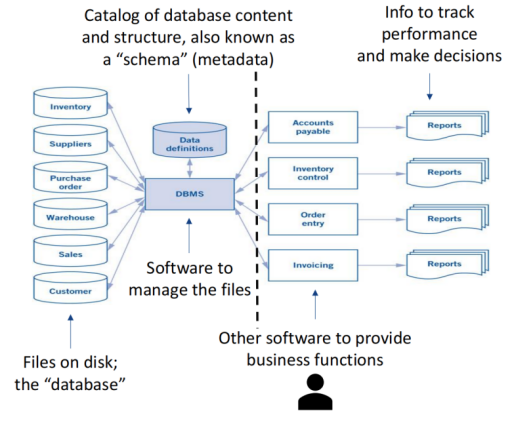
Unit 2 - Entity Relationships Database¶
1. Relational Database & DBMS¶
Relational DBMS enforces how data is stored and structures the based on business rules, through:
- Unique fields (PK) to identify entity
- Referencing fields (FK) to describe entity relationships
- Required fields
- Data type, size, and range
Relational DBMS Key Terminology:
- Row / Record / Case: A single entry that stores information about a specific event or object, e.g., a customer, an order, a product
- Column / Field / Attribute: An individual piece of information within a record, representing a specific attribute
- Table / Entity: A structured collection of records that share the same set of fields
-
Structure: The defined format of a table enforced by the DBMS
- Field names
- Data types & size (text / number / date)
- Allowed values
- NULL rules
-
Schema: A group of contextually related tables that together represent a data model for a business
Reasons for Using Relational Database:
- Better define the structure to enhance meaning, reduce redundancy, and improve data quality
- Provide standardized interface (SQL) for defining, creating, modifying and retrieving data
- Provide ease of access to data
- Provide security controls and safeguard against loss and theft of data
- Help maintain audit trails
- Provide an integrated, enterprise-wide data repository as the single source of record
2. Normalization¶
Normalization: Dividing One Big Table to Multiple Tables
- Normalization is the process of separating a single table into its many related component tables
- Normalized schema is the resulting schema with multiple related component tables
- Modern design of normalized schema is designed and documented using ERD
Demonstration: Relational Database: Normalization

3. Primary Keys & Foreign Keys¶
(1) Key¶
Key: A field or a set of fields that uniquely identifies a record
For example: In a table of students, the following fields can be used as keys:
- Student ID Number
- Citizen ID Number
- Social Insurance Number
(2) Primary Key & Alternative Key¶
Primary Key & Alternate Keys
- Defined as part of the metadata
- Create rules that the database will enforce to ensure uniqueness
Primary Key (PK): Key we have chosen to uniquely identify each record of a table
-
Primary keys must:
- Have unique & known values - cannot be NULL
- Cannot change over time
- Should involve the fewest number of fields as possible
-
Natural Key vs Surrogate Key
- Natural Key: selected from known facts
- Surrogate Key: invented or designed for the database
Alternative Key (AK): Keys other than primary key
For example: In a table of students:
- If Student ID Number is set as PK
- Then, Citizen ID Number and Social Insurance Number are AKs
(3) Foreign Key¶
Foreign key (FK): Non-key field in a table that references the primary key of another table
- Foreign keys facilitate relationships between tables
- DBMS will preserve and enforce the validity of the linked values
-
For example: A refer B:
- Cannot insert or update a record in A with a foreign key that does not exist in B
- Cannot delete a record in the B, unless all the records referencing it are deleted from A
Demonstration: Primary Keys & Foreign Keys
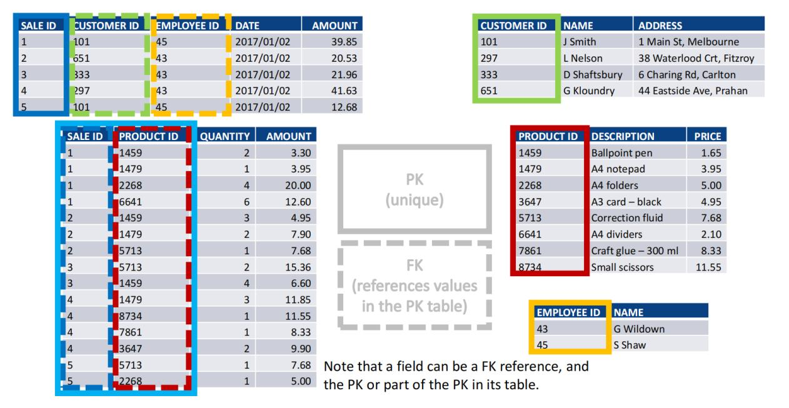
Unit 3 - Entity-Relationship Diagram (ERD)¶
1. ERD Concepts¶
Definition of ERD: A semantic, graphical data model about how stored information is structured
- Design and document database schema
- Picture characteristics and relationships of entities (people, places, objects, events, concepts)
- Expresses business rules as defined by the structure of the database
Reasons for using ERD: Provides documentation about the database
- ERD is a technology independent tool for business people and IT people to communicate
- ERD can results in a normalized schema if designed properly - revising poorly structured databases after software written or data recorded wastes time money
2. Cardinality¶
Cardinality: Numerical relationship between occurrences of one entity and occurrences of the other
(1) Unidirectional Relationship¶
Maximum vs Minimum Cardinality:
-
Maximum Cardinality: maximum number of relationships occurrences
- Maximum One (At most, can have one occurrence)
- Maximum Many (At most, can have many occurrences)
-
Minimum Cardinality: minimum number relationship relationships occurrence
- Minimum Zero (Optional: At least, can have zero occurrences)
- Minimum One (Required: At least, must have at least one occurrence)
Crow’s foot notation:
- In Theory:

- In Practice:

- On the many side, we belive the minimum is always zero, therefore we only need to specify the maximum cardinality.
(2) Bidirectional Relationship¶
1. One-To-One:
Considering maximum cardinality: One-to-one relationship between A & B means:
- One occurrence of A is related to at most one occurrence of B
- One occurrence of B is related to at most one occurrence of A
Considering minimum cardinality: Specifically:
- One Required & One Optional: PK of optional side becomes FK on required side
- Two Required: FK can be on either side
- Two Optional: FK can be on either side
Demonstration: One-To-One Relationship
One Required & One Optional
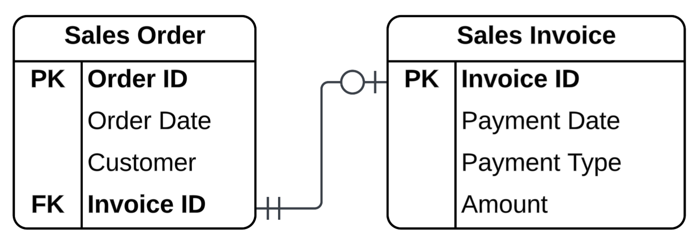
One-to-one relationship between sales order and invoice:
- One sales order is related to at most one & at least zero invoice
- One invoice is related to at most one & at least one sales order
Two Required
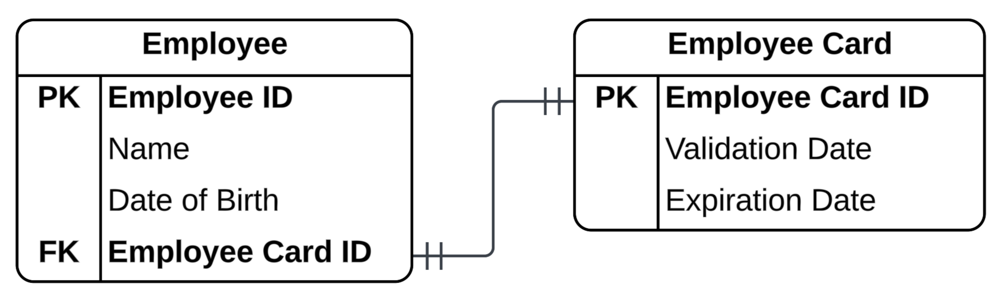
One-to one relationship between employee and employee card:
- One employee can have at most one & at least one employee card
- One employee card can belong to at most one & at least one employee
Two Optional
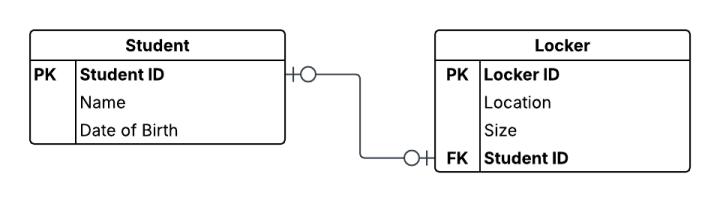
One-to one relationship between student and locker:
- One student can have at most one & at least zero locker
- One locker can belong to at most one & at least zero student
2. One-To-Many:
Considering maximum cardinality: One-to-many relationship between A & B means:
- One occurrence of A is related to at most many occurrences of B
- One occurrence of B is related to at most one occurrence of A
Considering minimum cardinality: Specifically:
- Optional One-To-Many: One occurrence on the "Many" side is related to at least zero occurrence on the "One" side
- Require One-To-Many: One occurrence on the "Many" side is related to at least one occurrence on the "One" side
In all cases of one-to-many relationship:
- PK on the "one" side becomes a FK on the "many" side
- PK is always on the "one" side & FK is always on the "many" side
Demonstration: One-To-Many Relationship
Optional One-To-Many:
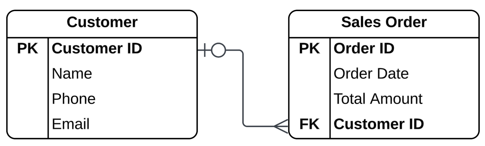
One-to-many relationship between customer and sales order:
- One customer can have at most many sales orders
- One sales order can belong to at most one and at least zero customer
Require One-To-Many:
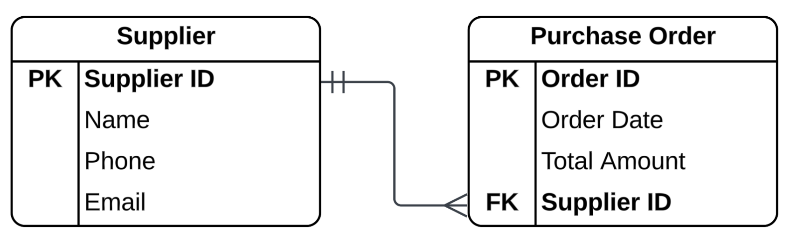
One-to-many relationship between supplier and purchase order:
- One supplier can have at most many purchase orders
- One purchase order can belong to at most one and at least one supplier
3. Many-To-Many:
Considering maximum cardinality: Many-to-many relationship between A & B means:
- One occurrence of A is related to at most many occurrences of B
- One occurrence of B is related to at most many occurrences of A
However, minimum cardinality in a many-to-many relationship is not usually specified, because:
- Many-to-many relationships cannot be implemented directly in a relational database
- Many-to-many relationships must be divided to two One-To-Many relationships through associative entity
- The PKs of the two related entities become the combined PKs of the associated entity
In terms of relationship between single entity and the associative entity:
- Single entity is on the "one" side of the relationship with the associative entity, with minimum cardinality always being one
- Associative entity is on the "many" side of the relationship with the single entity, with minimum cardinality not considered
Demonstration: Many-To-Many Relationship
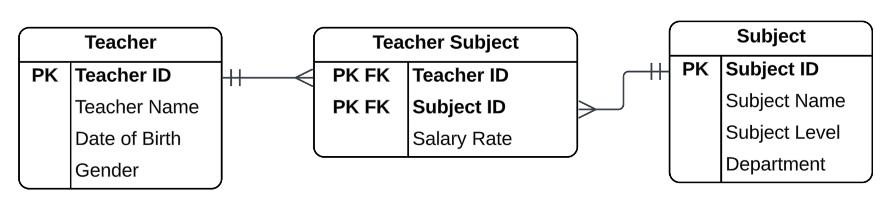
Many-to-many relationship between teacher and subject:
- One teacher can teach at most many subjects
- One subject can be taught by at most many teachers
One-to-many relationship between teacher and teacher-subject:
- One teacher can have at most many entries in teacher-subject table
- One entry in teacher-subject table is related to at most one and at least one teacher
One-to-many relationship between subject and teacher-subject:
- One subject can have at most many entries in teacher-subject table
- One entry in teacher-subject table is related to at most one and at least one subject
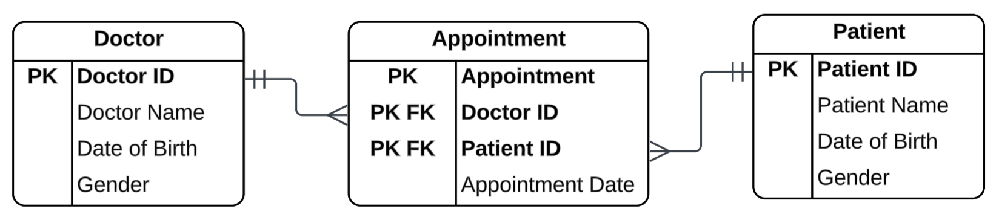
Many-to-many relationship between doctor and patient:
- One doctor can treat at most many patients
- One patient can be treated by at most many doctors
One-to-many relationship between doctor and appointment:
- One doctor can have at most many appointments
- One appointment is related to at most one and at least one doctor
One-to-many relationship between patient and appointment:
- One patient can have at most many appointments
- One appointment is related to at most one and at least one patient
(3) Special Relationships¶
1. Unary Relationships:
Unary relationship means that an entity can refer itself:
- The PKs and FKs are on the same table
- Unary relationships can be one-to-one, one-to-many, or many-to-many (through an associative entity)
Demonstration: Unary Relationship
Unary One-To-One
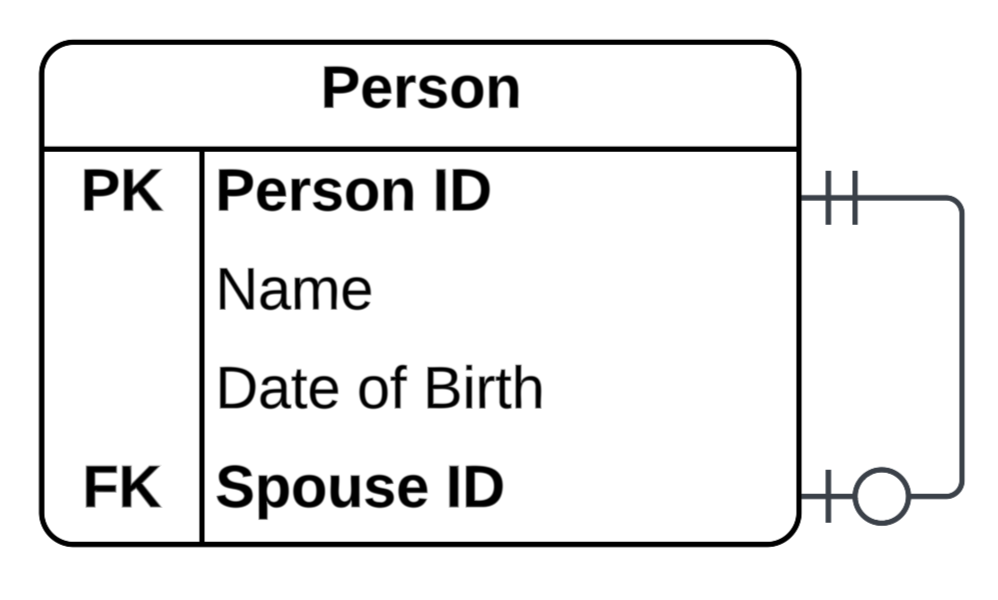
Unary One-To-Many
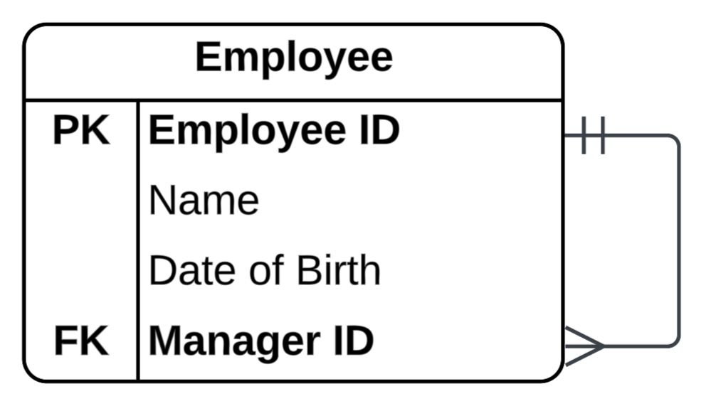
Unary Many-To-Many (through an associative entity)
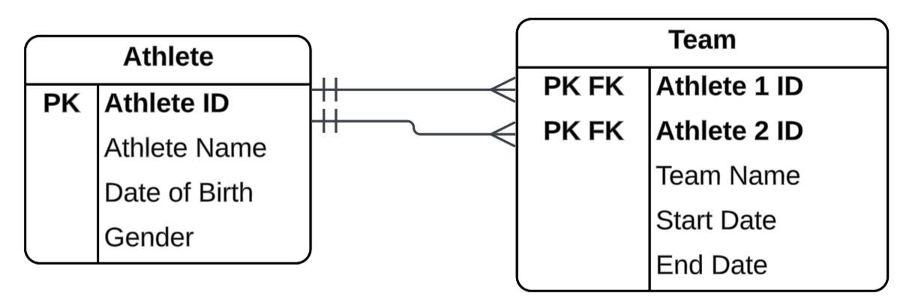
2. Referencing with Multiple Foreign Keys to Same Table
Referencing with multiple foreign keys to the same table means that:
- Two different FKs in the same table reference the same PK in another table
- This is similar to many-to-many unary relationship with associative entity
Demonstration: Referencing with Multiple Foreign Keys to Same Table
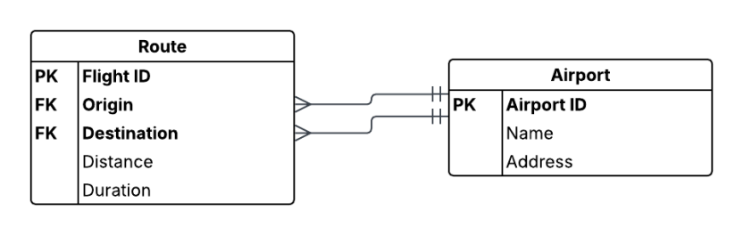
3. One-To-One or One-To-Many using Association Entity
In many-to-many relationships, we use an associative entity:
- However, we can also use an associative entity to implement one-to-one or one-to-many relationships
- In this case, we ususally want to capture some attributes of the relationship, which is not possible to capture in a direct relationship between two entities
Demonstration: One-To-One or One-To-Many using Association Entity
One-To-One using Association Entity
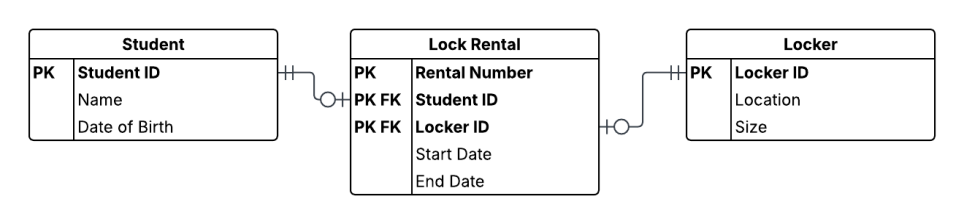
One-To-Many using Association Entity
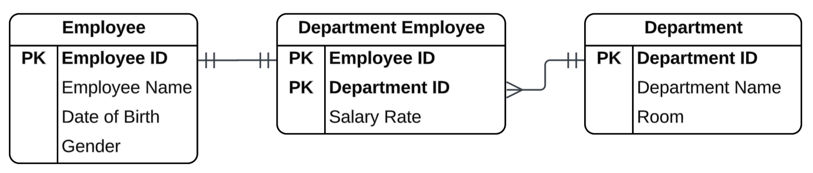
4. Ternary Relationship:
Ternary Relationship means many-To-Many among three entities through association entity
- This is similar to many-to-many relationship between two entities with associative entity
- The PKs of the three related entities become the combined PKs & FKs of the associated entity
Demonstration: Ternary Relationship
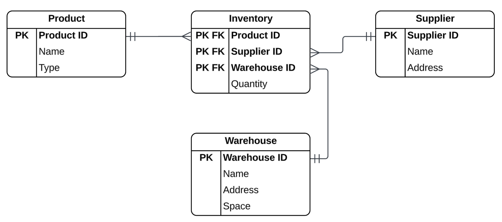
3. ERD Design¶
(1) ERD Models¶
ERD Models:
-
Conceptual Model: Overall Scope
- Include general entities
- Include high-level relationships
-
Logical Model: General ERD
- Specify operational and transactional data entities
- Include fields for each entity are identified
- Identify keys, primary keys, and foreign keys for each entity
-
Physical Model: Specific ERD (ready for implementation)
- Map entities to database tables
- Specific data types and sizes of each field
Reasons for Classifying ERD Models
- Design and document data models at different levels of abstraction
- Different audiences have different needs for different levels of detail (managers, analyst, IT)
- Good modelling process starts at the highest level of abstraction (conceptual) and work down towards the detail (logical & physical)
(2) Technical Consideration vs Business Consideration¶
The structure and logic of the database enforce the model of database:
- Choice of entities, attributes, relationships and associated cardinalities
- Modeling correctly when designing the database is important
- Subsequent changes can be risky and costly, which may introduce other problems
Key consideration: model should support the operating and reporting needs of the organization
- This is not a technical issue, while there are technical aspects
- This is a business issue and essential to the business
- This should be made with active involvement from people who understand the business